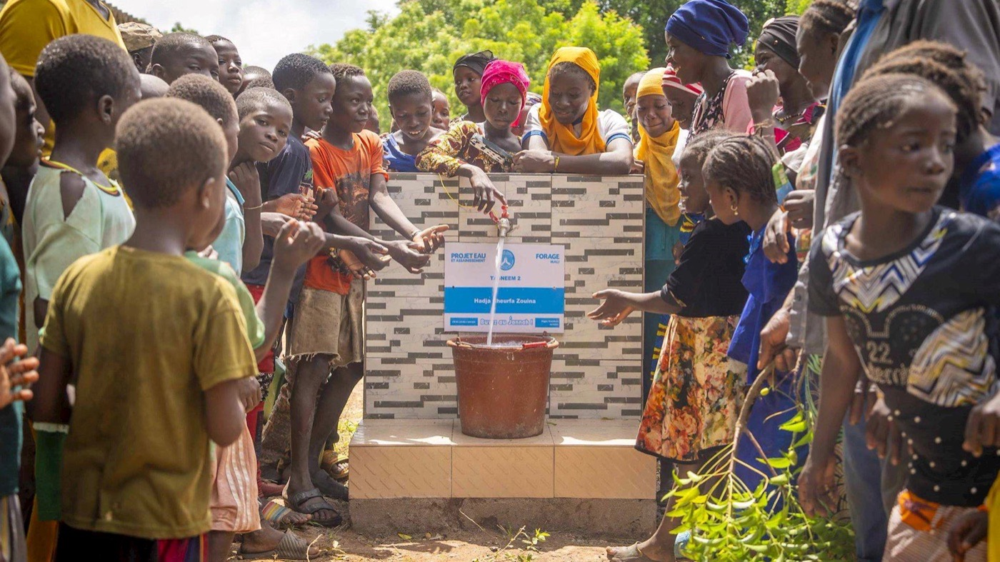
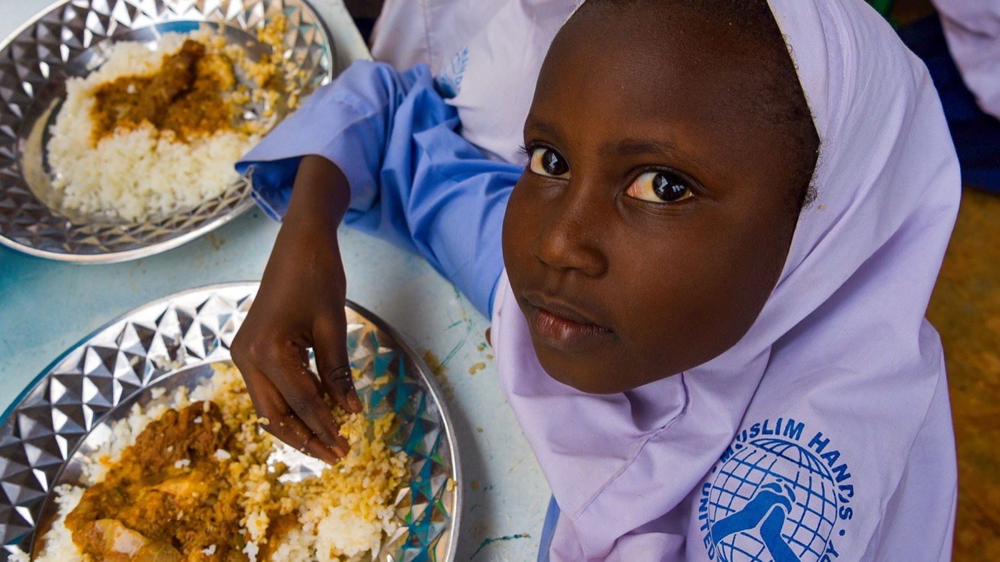
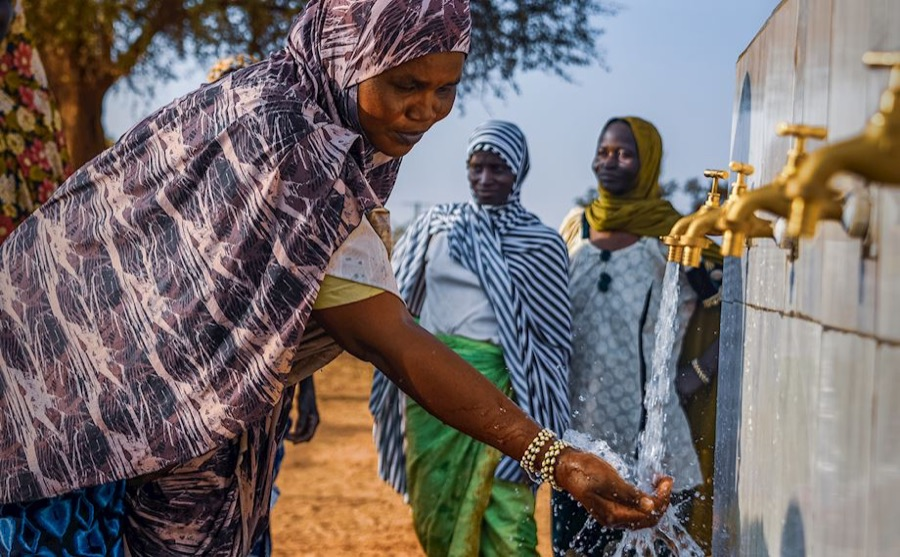

- 7 € par personne du foyer, bébés compris
- Remise en denrées avant la prière de l'Aïd
- Reçu fiscal immédiat, 66 % déductibles
Qu'est-ce que la zakat al fitr ?
La zakat al fitr, que l'on écrit aussi zakat el fitr ou sadaqat al-fitr, est la « zakat de la rupture du jeûne ». Le Prophète l'a prescrite à la fin du Ramadan pour deux raisons : purifier le jeûneur des paroles et des gestes inutiles du mois, et nourrir les pauvres le jour de la fête. Ibn Abbas rapporte qu'elle est « une purification pour le jeûneur et une nourriture pour les nécessiteux ». C'est une obligation pour chaque musulman, petite par son montant, immense par son effet : le jour de l'Aïd, personne ne doit avoir faim.
À l'origine, elle se mesurait en un sa' de denrées, environ 2,5 kg de blé, d'orge ou de dattes. Aujourd'hui, les instances religieuses de chaque pays en fixent l'équivalent en monnaie, d'après le prix d'un repas local.

Ma zakat al fitr 2027
7 € par personne : choisissez la taille de votre foyer.
28 € vous coûtent 9,52 € après réduction d'impôt de 66 %.
Verser ma zakat al fitrDistribuée en nourriture avant la prière de l'Aïd · reçu fiscal immédiat
Quel est le montant de la zakat al fitr en 2027 ?
En France, la Grande Mosquée de Paris retient 7 € par personne pour 2027 ; le CFCM indique 9 €. Vous pouvez choisir l'une ou l'autre référence, ou arrondir à la hausse : le surplus est distribué comme sadaqa. Le montant se multiplie par le nombre de personnes du foyer, enfants et nouveau-nés compris.
| Personnes à charge | Montant 2027 | Coût réel après impôt |
|---|---|---|
| 1 personne | 7 € | 2,38 € |
| 2 personnes | 14 € | 4,76 € |
| 4 personnes | 28 € | 9,52 € |
| 6 personnes | 42 € | 14,28 € |
| 10 personnes | 70 € | 23,80 € |
Coût réel calculé avec la réduction d'impôt de 66 %. Le montant 2027 sera confirmé avant le début du Ramadan ; cette page est mise à jour aussitôt.
Qui doit payer la zakat al fitr ?
Tout musulman qui dispose, le jour de l'Aïd, de plus que le nécessaire pour sa journée et celle de sa famille. Le seuil est volontairement bas : il ne s'agit pas du nisab de la zakat al maal. Le chef de famille la verse pour lui-même et pour chaque personne à sa charge : conjoint, enfants, parents hébergés. Un enfant né avant la prière de l'Aïd compte ; une personne décédée avant le coucher du soleil de la dernière nuit ne compte plus. Beaucoup de familles la versent aussi pour un proche sans ressources.

Jusqu'à quand verser la zakat al fitr ?
La date limite est la prière de l'Aïd el-Fitr, attendue le 9 ou 10 mars 2027 selon l'observation du croissant. Versée après la prière, elle perd son statut de zakat al fitr et devient une sadaqa ordinaire. La plupart des savants autorisent le versement un ou deux jours avant la fête ; l'école chaféite l'admet dès le début du Ramadan. C'est ce que nous recommandons : nos équipes doivent acheter les denrées, préparer les sacs et les remettre dans des villages parfois éloignés. Une zakat al fitr versée le 8 février est distribuée sans stress le 8 mars.

Zakat al fitr ou zakat al maal : quelle différence ?
Les deux portent le nom de zakat, mais elles n'ont ni la même base ni le même calendrier. La zakat al fitr est due par personne, une fois par an, à la fin du Ramadan, pour un montant fixe. La zakat al maal est due sur le patrimoine : 2,5 % de l'épargne, de l'or, des placements et des stocks qui dépassent le nisab depuis une année lunaire, à la date anniversaire de votre calcul. Le calculateur de zakat ne sert qu'à la seconde ; pour la première, il suffit de compter les membres du foyer.

Zakat al fitr, fidya, kaffara : ne pas confondre
La fidya compense un jour de jeûne qu'une personne malade ou âgée ne pourra pas rattraper : 7 € par jour manqué, soit le prix d'un repas, et seules les personnes concernées la doivent. La kaffara expie un jour rompu volontairement : 420 € par jour. La zakat al fitr, elle, est due par tous les jeûneurs, en bonne santé ou non, et ne dépend pas du nombre de jours jeûnés.

Où et comment nous la distribuons
Vous nous confiez votre zakat al fitr en argent ; nous l'utilisons pour acheter des denrées de base sur les marchés locaux et les remettre en main propre avant la prière de l'Aïd. En France, elle rejoint les colis et les iftars de nos antennes de Paris, Lyon et Marseille. À l'international, elle part au Mali, au Niger, au Sénégal, au Pakistan, au Bangladesh, au Yémen et à Gaza, vers des familles identifiées avec les comités de village : veuves, familles d'orphelins, déplacés. Les listes sont dressées pendant le mois, les sacs préparés la dernière semaine. Vous recevez un bilan par e-mail après l'Aïd.

Zakat al fitr et impôts
Muslim Hands France est une association d'intérêt général : votre zakat al fitr ouvre droit à une réduction d'impôt sur le revenu de 66 %. 28 € pour un foyer de quatre personnes vous coûtent 9,52 € ; 100 € donnés vous coûtent 34 €. Le reçu fiscal est envoyé par e-mail immédiatement après le paiement. Tout savoir sur la déduction fiscale.

Questions fréquentes sur la zakat al fitr 2027
Quel est le montant de la zakat al fitr en 2027 ?
7 € par personne en France, selon la référence de la Grande Mosquée de Paris (le CFCM retient 9 €). Le montant correspond au prix d'un repas local et sera confirmé avant le Ramadan 2027. Pour un foyer de quatre personnes, comptez 28 €.
Qui doit payer la zakat al fitr ?
Tout musulman qui dispose, le jour de l'Aïd, de plus que le nécessaire pour sa journée. Le chef de famille la verse pour lui-même et pour chaque personne à sa charge : conjoint, enfants, parents hébergés, y compris un bébé né avant la prière de l'Aïd.
Jusqu'à quand verser la zakat al fitr ?
Avant la prière de l'Aïd el-Fitr, attendue le 9 ou 10 mars 2027. Versée après la prière, elle devient une simple sadaqa. Nous recommandons de la régler dès le début du Ramadan pour que la nourriture soit achetée et remise à temps.
Peut-on donner la zakat al fitr en argent plutôt qu'en nourriture ?
Vous nous la confiez en argent ; nos équipes achètent avec ce montant des denrées de base (riz, farine, huile, dattes) et les remettent aux familles avant la prière de l'Aïd. La règle de la distribution en nourriture est ainsi respectée, quel que soit l'avis que vous suivez.
Quelle est la différence entre zakat al fitr et zakat al maal ?
La zakat al fitr est due par personne, une fois par an, à la fin du Ramadan : 7 € par membre du foyer. La zakat al maal porte sur le patrimoine : 2,5 % de l'épargne et des biens qui dépassent le nisab depuis une année lunaire.
Zakat al fitr et fidya, est-ce la même chose ?
Non. La zakat al fitr est due par tous les jeûneurs à la fin du mois. La fidya compense chaque jour de jeûne non rattrapable, 7 € par jour, et ne concerne que les personnes qui ne peuvent pas jeûner.
La zakat al fitr est-elle déductible des impôts ?
Oui. Muslim Hands France est d'intérêt général : 66 % du montant est déductible de l'impôt sur le revenu. 28 € pour un foyer de quatre vous coûtent 9,52 €. Le reçu fiscal est envoyé par e-mail immédiatement.

Du pain, avant la prière.
Versée tôt, votre zakat al fitr est remise en nourriture à temps pour l'Aïd el-Fitr.
Verser 7 € par personne